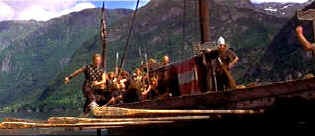

| Vikings, The (SE) B, B |
| MGM/1958/116/ANA 2.35 |
Bottom line: The Vikings is fun!
The Vikings is a pretty
simplistic revenge actioner that depends more on production detail and
sweeping cinematography than plot or character to deliver an entertaining
package. It's pretty much comic book in its approach, classic comic
perhaps, but still drawn in obvious tableaus.
 |
|
Douglas walks the oars.
©MGM
|
Don't look for much sophistication in the plotting. In this tale of The
Vikings, they are persistent raiders on the English coast, raising
fear in the hearts of the more refined Englishmen. Ragnar leads one band
of especially ferocious Norsemen. In one of his errant raids his sleeps
with a Queen and kills a king, thereby setting up the tale of
revenge that plays out twenty years later.
Kirk Douglas overacts as Einar, natural son of
the Viking leader Ragnar. It's fun to watch Douglas chew the scenery. His
intensity and the script somehow don't marry. Ernest Borgnine lends hearty
support as Ragnar, roaring with laughter at every posturing Douglas
moment. Tony Curtis seems rather prissy as Eric, the toughened slave
with royal bloodlines. Janet Leigh is a mighty tempting dish as Morgana.
It's not hard to imagine the boys chewing up the sets over her. The replicas of
the Viking sailing ships and the beautiful landscape of the Norwegian
fjords are handsomely photographed by veteran Jack Cardiff. Obviously, the hard work that went into
setting up the production paid off handsomely on the finished look. The
musical theme of composer Mario Nascimbene delivers a beautiful simplicity
repeating the the lustful sound of the Vikings great horn. Director Richard Fleischer captures the
majesty of the water and mountains that surround the Viking homeland, yet
gets the action moving as quickly as possible. Viking parties are a wonder
of drunken lust and attack on Aella's castle is a paradigm of fine action
direction. The swordplay is convincing and the Viking thunder none-stop.
The transfer looks quite fresh save for a tiny hint of element fading.
Overall, color saturation is good and the wonderful sweeping images of
cinematographer Cardiff are thoroughly breathtaking. Fog is handled very
well in tight grain patterns. There are small markings of dirt and small
scratches, but they are kept to a minimum. Black levels are mostly fine
save for one particular night scene that appears washed out. One bad
horizontal line crops up during the night rowing scene. The few outdoor
scenes flooded with sunshine are very brightly lit with excellent
contrast. Look at that beautiful purple robe that Morgana lies upon in the
forest glade. Delicious, and Leigh doesn't hurt the composition either.
The Dolby 2.0 mono sound delivers the goods with an open sound stage and
good range.
As a special edition bonus, MGM includes a video
commentary with production photos hosted by director Richard Fleischer.
The 28 minute documentary is filled with interesting details about the
production and Fleischer is an excellent guide whose memory of the film is
as clear as the waters surrounds the Viking lands.
He relates the walking of the oars
sequence with wonder and admiration for Douglas. Fleischer had stunt men
rehearse the scene for almost three weeks and when Douglas arrived he said
he could do that and promptly walked the oars perfectly two times
consecutively, only landing in the water on the third try, which appears
in the completed film.
|
|
|
|

The Movie Poster
Archive includes extensive poster images from the films of stars like
Susan Hayward, Kirk Douglas, Katharine Hepburn and many more. Our
featured star is Kirk Douglas.

Spartacus (SE) /A, B+

This is one of the great epic films with an animally electric performance
from Kirk Douglas. Great special editon.

 Have you visited
Home Theater
Talk lately? One of the friendliest places on the Net for Home
Theater and DVD discussion, you can get help for installation problems or
simply share your opinions with other Vidiots. Have you visited
Home Theater
Talk lately? One of the friendliest places on the Net for Home
Theater and DVD discussion, you can get help for installation problems or
simply share your opinions with other Vidiots.
 Brad Lang
continues to add more interesting material to the extensive collection at Classic Movies.
Everything from actors and actress to your favorite directors is linked at
the site. Brad Lang
continues to add more interesting material to the extensive collection at Classic Movies.
Everything from actors and actress to your favorite directors is linked at
the site.

Timely DVD reviews and an easy-to-use interface. Weekly
contests.

"CinemaQuest has matched the correct TV color of gray in a light
fixture."__Joe Kane
Monitor bias lighting in a pre-packaged configuration. Take the strain off
your eyes.

Mystery writer Fred Hunter digs into classic films on DVD. Check out his
insightful reviews at The Classics on DVD.
|